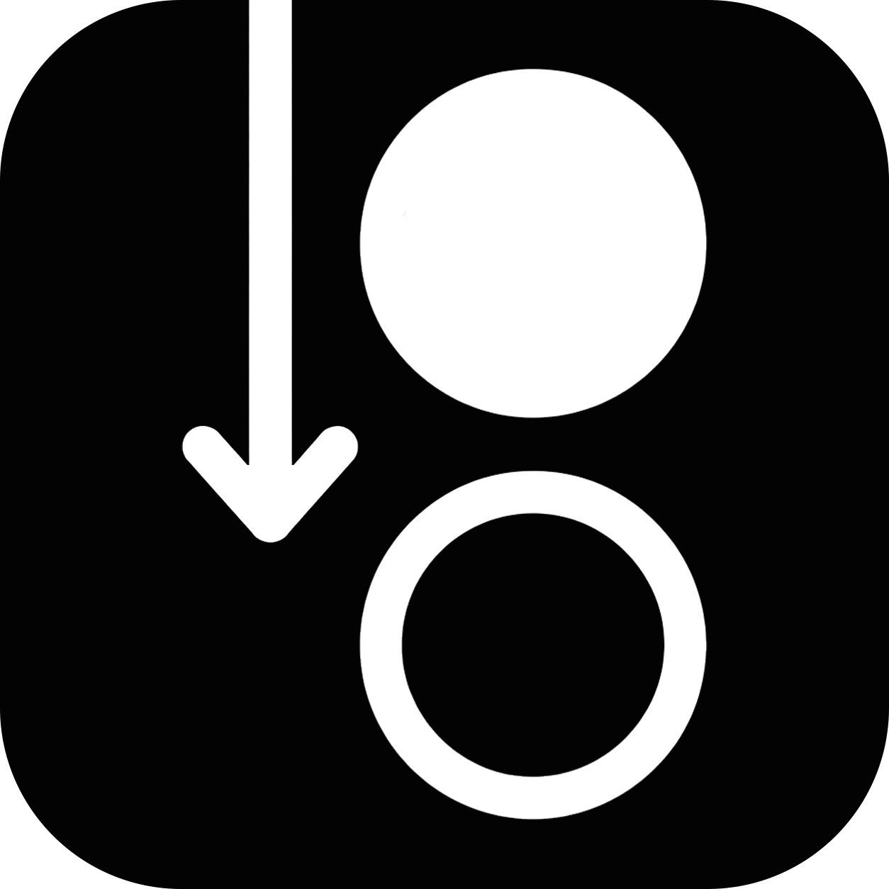

Talk
Explore the repository with a read-only planning agent.

BDFLOpen source terminal supervisor
BDFL turns one ambitious coding task into a deliberate plan, isolated parallel work, and a result you review before it ever reaches your branch.
One supervisor. Your choice of agents.
01 / THE IDEA
BDFL gives the speed of multiple coding agents a human checkpoint at every consequential step. Talk through the problem, approve the exact plan, inspect every result, and integrate only when the whole change holds up.
02 / WORKFLOW
Eight explicit stages keep intent, implementation, and evidence connected.
Explore the repository with a read-only planning agent.
Define decisions, chunks, dependencies, locks, and checks.
Compare plan versions and request revisions where needed.
Lock the exact sections you trust for execution.
Run eligible chunks in isolated worktrees, in parallel.
Inspect diffs and checks; accept or return with feedback.
Run global checks and a fresh, non-implementing review.
Bring the consolidated result into a clean target branch.
03 / CONTROL SURFACE
Enough structure to coordinate serious work without turning your terminal into project-management software.
Compare adjacent versions, approve individual sections, preserve unchanged approvals, and unlock anything that needs another pass.
Mix Codex, Claude Code, and Ollama across planner and worker roles, with separate models and effort levels.
Workers edit only their own worktrees. Dependencies and named locks keep conflicting tasks in order.
See summaries, changed paths, actual diffs, check results, and commit metadata before accepting a worker’s result.
Session metadata, plans, snapshots, diffs, and worktrees live in the repository’s ignored .bdfl/ directory. BDFL publishes no metrics, analytics, logs, or local runtime state.
04 / IN THE TERMINAL
Top-level workspace actions, durable sessions and plans, and an agent rail that shows exactly who is working—or waiting for you.
This demo is live. Click the top actions and agent rail.
05 / GET STARTED
Install globally, move into any Git repository, and launch the supervisor.
$ npm install --global @thisisnsh/bdfl
Requires Git, Node.js 20+, and at least one supported agent CLI installed and authenticated.